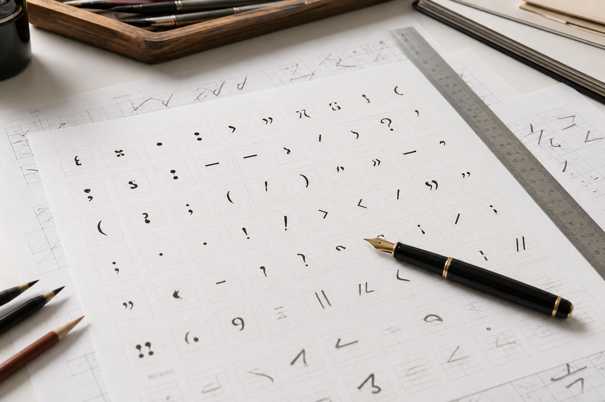
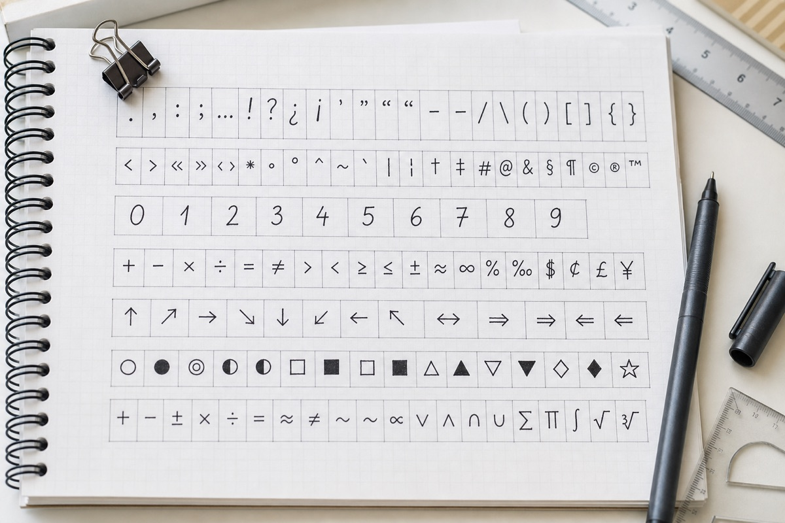

杭州手写字体字稿，为什么数字和标点也要单独整理？
数字、日期和标点在实际文件中出现频率很高。杭州站从模仿笔迹和手写字稿的连续性出发，说明模仿签名、模仿签字及笔迹鉴定材料的整理方法。

数字、日期和标点在实际文件中出现频率很高。杭州站从模仿笔迹和手写字稿的连续性出发，说明模仿签名、模仿签字及笔迹鉴定材料的整理方法。

长页书写到后半段容易压缩行距，先记录纸张规格和段落位置更便于还原版面。本文从杭州实际资料整理角度说明页面、版本与原图的保存方法。

光滑纸与吸墨纸会呈现不同线条，比较签名时要同时记录纸张和笔尖。本文从杭州实际资料整理角度说明页面、版本与原图的保存方法。
页边批注的方向和空间受页面限制，裁掉正文或纸边会失去重要的位置参照。本文从杭州实际资料整理角度说明页面、版本与原图的保存方法。

杭州站手写文案新增版式确认清单，围绕杭州模仿笔迹、模仿签名、模仿签字和笔迹鉴定更新服务资料。
杭州手写文案版式如何说明？模仿笔迹行数与落款整理，围绕杭州模仿笔迹、模仿签名、模仿签字和笔迹鉴定介绍资料准备方法。

围绕模仿笔迹、模仿签名、模仿签字和笔迹鉴定整理实用资料。

介绍服务内容、样本要求、价格因素和办理流程。

介绍签名服务范围、签字样本要求、费用与周期。

介绍笔迹鉴定范围、对比材料、费用周期和常见问题。

介绍手写文件、个人字体、字符数量和交付方式。